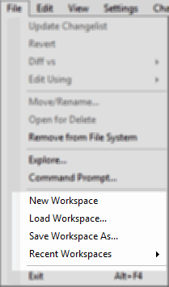

Under the main application File menu there are operations for managing workspaces:

A workspace is simply a set of repositories. Each workspace can store a number of repos. GitForce is using its own default workspace to store all repos listed under Repositories pane.
Having the option to group sets of repos comes useful when you have related sets which you may want to keep separate, for example when working with Android source trees: you can keep repos from each Android branch separately (if your workflow sets it up that way).